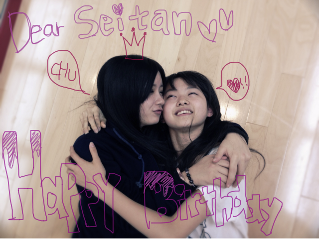
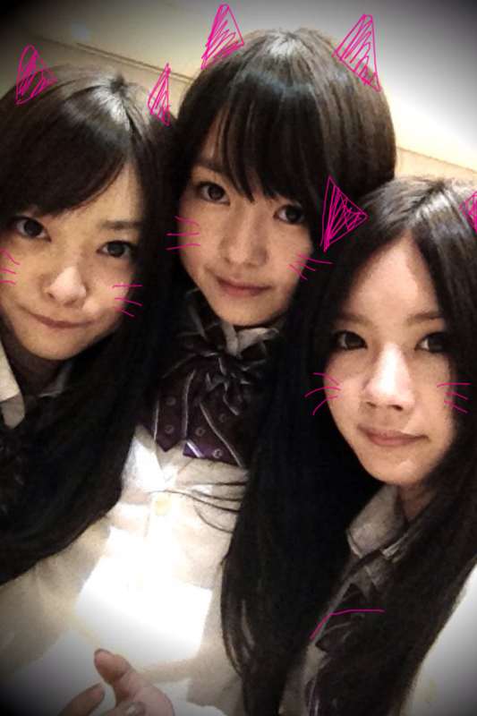

いつも読んでくださってる方、
初めて読んでくださった方、
コメントしてくださった方.....!!
こんばんわ:D
前に載っけたしゃしんで
みなさん、メンバーに絶賛されて
うひょうひょなベビたんですよ。
久しぶりにLesson行ってきやした~=3!!
*****HappY BiRtHDay*****
せいたん♡2011.12.5
みんなLessonお疲れ様*
楽しかったな~♪
せいたんおめでとぅ♡
mail送ったら、私のこと『ばかすっき♥』やって♡
うん。知ってる♡←
せいたんちゅっちゅしてもらった!
いっつもされるけどね><
まりかもちゅーした笑
せいたんの大分弁すき!
つんつんかわい-もう!!
やさしくて涙もろいとこもすきや-!
せいたんだいすきっちゃ////
素敵な一年になりますように~~~!!!!!

おめでとう
i LOVE seitan
..:*+＊。.*。＊*...

ねね、私、せいたん＊
にゃー
寒くなってきました~!!
めっちゃ寒い><
軽いダウンおすすめですよぉ!
あったかいよ~^^*
オオカミの足もあったかいの--いひひ
ツインテールはテスト終わったら
載せるーねっ☆
他にもいろいろ載せたいな-*
いつも沢山のコメントありがとうございます＊
もうね!本当にうれしいわっ!!
どこまで私をほっかほかにさせて
うれしくさせるんや--------!!!!!←
お手紙、何でもうれしいです!
ありがとうございます***
質問はまたゆっくり返します><
明日でテスト終わりだ!!
がんばろ-------------=3
風邪ひかないようにね。
みんなだいすき♡***
ベビたん*****bA by marika